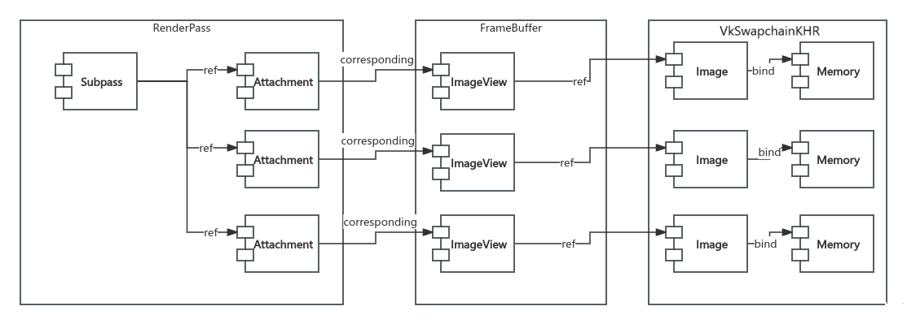
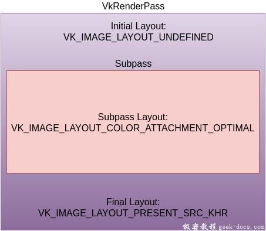
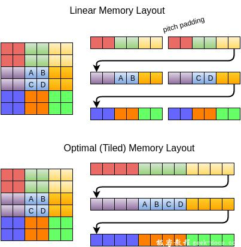

写在前面：本部分为《Step-by-Step学习Vulkan编程入门》的第9步，从逻辑上讲可能有些不够严密，顺着前面“创建交换链并创建了与交换链内部VkImage关联的vectror
在Vulkan程序中，交换链VkSwapchainKHR对象中的std::Vector

◆ RenderPass中有很多个Attachment每个，Attachment对应一块内存空间。Attachment用于指明该空间在渲染时具体起到的作用。如：颜色缓存、深度缓存、模板缓存等。 ◆ 多个Attachment由一个Subpass进行关联，指明一次渲染会用到Subpass中的所有的Attachment。比如将第一个Attachment当作颜色缓存，将第二Attachment当作深度缓存。 ◆ 一个RenderPass对应一个FrameBuffer。而FrameBuffer中有多个ImageView，每个ImageView对应一个RenderPass中的Attachment。ImageView还不是真正的内存空间。 ◆ ImageView会关联到一个Image。Image是对内存空间的描述，每个Image对象就是我们再创建交换链VkSwapchainKHR 对象时生成的VkImage对象。
采用这种显存关联方式设计应用程序，程序的绘制代码就不直接与VkSwapchainKHR对象、VkFrameBuffer对象打交道了，绘制代码执行过程中操作的对象为VkRenderPass对象中Attachment对象，而Attachment对象通过VkRenderPass对象内部的VkSubpass对象进行约束，就保证了渲染过程中的数据传输校验的问题。
VkRenderPass是VulkanAPI中描述渲染流程的对象，表示附件Attachment、子通道Subpass和子过程之间的依赖关系Dependency的集合，并描述了在子过程中如何使用附件，包括附件（VkAttachmentDescription）布局变化、同步操作和子通道关系。它定义了颜色附件和深度附件/模板附件，以及它们在渲染开始和结束时的布局（VkAttachmentReference）。子通道(VkSubpassDescription)引用允许灵活控制附件在不同阶段的使用布局。子通道依赖用于同步资源访问和布局转换（VkSubpassDependency），确保渲染过程的正确性和性能。VkRenderPass对象会在命令缓冲中，通过vkCmdBeginRenderPass等命令记录渲染管线GraphicsPipeline的渲染指令的渲染结果，实现多子通道的渲染操作。
总之Vulkan 渲染通道(RenderPass) 规定了整个渲染管线一次执行的过程，包括了渲染所使用的所有资源和操作的描述(比如指定渲染管线的渲染目标，告诉管线要渲染到哪里)。RenderPass 本质上是一个渲染流程的完整描述(管理渲染流程)，包括如何渲染这些数据的元数据和指令，但是不包括实际的数据(图像)，通过与 FrameBuffer 结合来获取实际的图像数据，在Vulkan编程，RenderPass是必不可少的，它必须包含一个或者多个子通道(SubPass) 。
每个子通道表示一个渲染阶段，并且都是使用 RenderPass 中定义的渲染数据描述VkAttachmentDescription定义这个阶段的渲染的步骤。
① Attachment 附件----VkAttachmentDescription对象：
RenderPass 是通过附件(Attachment)的形式描述图像资源，包括颜色附件(Color Attachment）、深度/模板附件(Depth/Stencil Attachment)、用于多重采样的的解析附件(Resolve Attachment)和输入附件(Input Attachment)等。通俗的理解附件(Attachment)就是参与渲染的图像资源，严格来说它就是已经存在的资源，只是这里换种方式引用他们，这里称为附件，就像图像资源的View视图。附件描述AttachmentDescription定义了参与渲染的图像的属性，包括其格式Format、采样数Sample以及在每个渲染通道实例的开始操作Load Operation和结束操作Store Operation时如何处理其内容。
Vulkan RenderPass常用附件描述包括以下几种类型：
◆颜色附件（Color Attachment）：用于存储颜色信息，通常用于渲染图像或场景的颜色输出。
◆深度/模板附件（Depth/Stencil Attachment）：用于存储深度信息和模板信息，常用于实现深度测试和模板测试。
◆输入附件（Input Attachment）：用于读取其他RenderPass的输出结果，常用于实现复杂的渲染效果，如多层渲染或后期处理效果。
◆解析附件（Resolve Attachment）：用于解决多重采样问题，通常在多重采样后使用，将低分辨率的图像解析为高分辨率的图像。
目前阶段我们只要了解颜色附件和深度附件的描述就足够了。（一下代码不要添加在程序中，只是用于解释附件描述）
x1// 定义颜色附件描述2VkAttachmentDescription colorAttachment = {};3colorAttachment.format = VK_FORMAT_R8G8B8A8_UNORM; // 交换链图像格式4colorAttachment.samples = VK_SAMPLE_COUNT_1_BIT; // 采样数5colorAttachment.loadOp = VK_ATTACHMENT_LOAD_OP_CLEAR; // 在渲染前清除附件6colorAttachment.storeOp = VK_ATTACHMENT_STORE_OP_STORE; // 在渲染后存储附件内容7colorAttachment.stencilLoadOp = VK_ATTACHMENT_LOAD_OP_DONT_CARE; // 不关心模板加载操作8colorAttachment.stencilStoreOp = VK_ATTACHMENT_STORE_OP_DONT_CARE; // 不关心模板存储操作9colorAttachment.initialLayout = VK_IMAGE_LAYOUT_UNDEFINED; // 初始布局10colorAttachment.finalLayout = VK_IMAGE_LAYOUT_PRESENT_SRC_KHR; // 最终布局11// 定义深度模板附件描述13VkAttachmentDescription depthAttachment = {};14depthAttachment.format = VK_FORMAT_R8G8B8A8_UNORM;15depthAttachment.samples = VK_SAMPLE_COUNT_1_BIT; // 采样数16depthAttachment.loadOp = VK_ATTACHMENT_LOAD_OP_CLEAR; // 在渲染前清除附件17depthAttachment.storeOp = VK_ATTACHMENT_STORE_OP_DONT_CARE; // 渲染后不需要存储附件内容18depthAttachment.stencilLoadOp = VK_ATTACHMENT_LOAD_OP_DONT_CARE; // 不关心模板加载操作19depthAttachment.stencilStoreOp = VK_ATTACHMENT_STORE_OP_DONT_CARE; // 不关心模板存储操作20depthAttachment.initialLayout = VK_IMAGE_LAYOUT_UNDEFINED; // 初始布局21depthAttachment.finalLayout = VK_IMAGE_LAYOUT_DEPTH_STENCIL_ATTACHMENT_OPTIMAL; // 最终布局
loadOp和storeOp相信经常使用URP的小伙伴应该都很熟悉了，我们在SetRenderTarget的时候会经常对这些值做文章。它们决定了在渲染前和渲染后我们会对attachment的数据做什么，我们具有以下选项给loadOp： ◆ VK_ATTACHMENT_LOAD_OP_LOAD：保留attachment上的当前内容。 ◆ VK_ATTACHMENT_LOAD_OP_CLEAR：在开始时使用一个常值清理attachment的内容。 ◆ VK_ATTACHMENT_LOAD_OP_DONT_CARE：当前attachment上的内容被认为是未定义的，我们不关心它。 在我们的项目中，我们会使用Clear操作，在绘制新一帧前用黑色来清理framebuffer。 storeOp只有2个可选项： ◆ VK_ATTACHMENT_STORE_OP_STORE：渲染完的内容将被存储到内存中，之后可以读取。 ◆ VK_ATTACHMENT_STORE_OP_DONT_CARE：在渲染完后，framebuffer的内容被视为未定义的。
我们想在渲染完三角形后看到它显示在屏幕上，因此我们使用store操作。 loadOp和storeOp应用于color和depth。stencilLoadOp和stencilStoreOp应用于stencil。
接下来看initialLayout和finalLayout。Vulkan中的textures和framebuffers都是用VKImages对象来表示的，而VKImage会包含一个特定的pixel format，我们可以根据我们要对Image做的操作改变内存中的pixel layout，以获取更好的性能。 以下为几个常见的Layouts：
◆VK_IMAGE_LAYOUT_COLOR_ATTACHMENT_OPTIMAL：Images被用作color attachment。
◆YOUT_PRESENT_SRC_KHR：Images在swap chain中被用作present。
◆VK_IMAGE_LAYOUT_TRANSFER_DST_OPTIMAL：Images被用作memory copy的destination。 将在texturing章节对该话题展开，但目前更重要的是，我们需要知道Images需要转换为适合接下来要涉及的操作的特定Layouts。initialLayout指定了在render pass开始前image将使用的layout。finalLayout指定了当render pass结束时image会自动切换成的layout。对initialLayout使用VK_IMAGE_LAYOUT_UNDEFINED意味着我们并不关心image之前的layout是什么样的。需要注意的是，这个UNDEFINED意味着image的内容不能保证被preserved，但这并不重要，因为我们会清理它。我们希望这个image在渲染完后被用于在swap chain中呈现，因此我们使用VK_IMAGE_LAYOUT_PRESENT_SRC_KHR作为finalLayout。下图描述了VkAttachmentDescription定义的附件VKImage对象从输入到输出过程的变化，中间部分就是Subpass通道的Layout类型。

initialLayout指定图像在开始进入渲染通道render pass前将要使用的布局结构。finalLayout指定当渲染通道结束自动变换时使用的布局。使用VK_IMAGE_LAYOUT_UNDEFINED设置initialLayout，意为不关心图像之前的布局。特殊值表明图像的内容不确定会被保留，但是这并不总要，因为无论如何我们都要清理它。我们希望图像渲染完毕后使用交换链进行呈现，这就解释了为什么finalLayout要设置为VK_IMAGE_LAYOUT_PRESENT_SRC_KHR。
如果没有搞清楚布局存在的意义，进一步解释layout请看如下图示:

一般意义上，我们理解CPU进行内存中的数据读写往往都是线性排序的linear memory layout，可以看到AB与CD作为来个连续的行来进行读取。但是在很多时候对于像素纹理数据的操作是非线性连续的，这种情景更多发生在GPU操作中，所以GPU硬件更多的支持基于(Tiled)平铺的或者成为最佳的内存布局结构，来提降低GPU处理数据的开销。所以从CPU linear layout 内存数据 到 GPU optimal layout 显存数据的读写 往返之间存在数据存储格式的优化转变步骤。
RenderPass中定义的子通道SubRenderPass并没有直接使用VkAttachmentDescription定义的定义颜色附件描述和深度模板附件描述，而是通过他们的一个引用结构来对附件相应的操作。
VkAttachmentReference colorAttachmentRef{}; colorAttachmentRef.attachment = 0; colorAttachmentRef.layout = VK_IMAGE_LAYOUT_COLOR_ATTACHMENT_OPTIMAL;
VkAttachmentReferencei结构中定义了一个布局成员变量layout，每个subpass可以指定的流程中需要用到的附件是哪些，以及使用该附件时，该附件的布局方式应该变为什么（layout字段指定）。通过在VkAttachmentReference中为每个附件指定layout字段，可以灵活地控制附件在子流程中的使用布局，而不仅仅受限于初始布局。这种灵活性有助于优化渲染流程，提高性能。
// 如果还有subpass2，它需要的颜色附件布局类型是不同的，则应该重新创建颜色附件的引用
VkAttachmentReference colorAttachmentRef2{}; colorAttachmentRef2.attachment = 0;//指向附件的数组下标 colorAttachmentRef2.layout = VK_IMAGE_LAYOUT_SHADER_READ_ONLY_OPTIMAL; // shader只读
// 如果还有subpass3，它的需求跟subpass1一样，那就直接重用上面的colorReference 即可
这里就能够看出为啥要用引用而不是直接使用附件了，灵活。
② Subpass 子通道----VkSubpassDescription
typedef struct VkSubpassDescription { VkSubpassDescriptionFlags flags;// 子通道描述的附加标志，目前必须为0 VkPipelineBindPoint pipelineBindPoint; // 管线绑定点，必须是 VK_PIPELINE_BIND_POINT_GRAPHICS uint32_t inputAttachmentCount;// 输入附件的数量 const VkAttachmentReference* pInputAttachments; // 输入附件数组 uint32_t colorAttachmentCount; // 颜色附件数量 const VkAttachmentReference* pColorAttachments; // 颜色附件数组 const VkAttachmentReference* pResolveAttachments; // 解析附件数组 const VkAttachmentReference* pDepthStencilAttachment; // 深度附件数组 uint32_t preserveAttachmentCount; const uint32_t* pPreserveAttachments; } VkSubpassDescription;
子通道表示渲染的一个阶段，在该阶段中会读取和写入渲染通道中的附件的某个子集（一部分或全部）。渲染命令就记录在某个渲染通道实例的特定子通道中。和附件一样，子通道也不需要实际创建出来，只需要描述，使用子通道描述SubpassDescription。子通道描述，描述了执行子通道所涉及的附件。每个子通道都可以从一些附件中进行读取操作将其作为输入附件，向一些附件中进行写入操作并将其作为颜色附件或深度/模板附件，对颜色附件或深度/模板附件执行着色器解析操作Resolve Operation，以及为解析附件Resolve Attachment执行多重采样MSAA解析操作。子通道描述还可以包括一组保留附件Preserve Attachment，这些附件不是子通道读取或写入的，但其内容必须在整个子通道中保留。
一个渲染通道可以包好多个子通道，并且每个子通道执行的操作依赖于经过前一个子通道的帧缓冲区Framebuffer的内容。可以理解为附件经过一个又一个子通道，在其中发生各式各样的操作。
子通道可以引用以下类型的附件：
◆pInputAttachments: 从着色器中读取的附件
◆pColorAttachments: 代表图像数据的附件
◆pResolveAttachments: 多重采样结果的颜色附件
◆pDepthStencilAttachment: 用于深度模板测试的附件
◆pPreserveAttachments: 不会被子通道使用，但会保留数据的附件
每种附件都需要通过AttachmentReferance指定其下标和引用时的布局。 其中下标就是创建渲染通道时指定的AttachmentDescription数组的下标，而布局决定了子通道引用它们时会自动转变为的布局。对于InputAttachment和ColorAttachment而言，它们各自数组的下标还与片元着色器中的输入（Input）或输出（Color）位置下标一致（数组下标 X 等价于 location = X）
③ SubpassDependency 子通道依赖
子通道依赖是用来描述子通道之间的执行依赖Execution Dependency和内存依赖Memory Dependency的，两者被引入两组“操作”之间发挥作用（后面会讲）。所谓的“操作”Operation在Vulkan就是指在主机，设备或某个外部实体（比如呈现引擎Presentation Engine）上执行的工作。
如果存在多个子通道，子通道的执行顺序可能会与其他子通道重叠或乱序执行，除非执行依赖另有规定。每个子通道只遵守自己通道中记录的命令的提交顺序，以及用于分隔渲染过程的vkCmdBeginRenderPass和vkCmdEndRenderPass命令，但是不包括其他子通道中的命令。这会影响大多数其他隐式排序保证机制
typedef struct VkSubpassDependency { uint32_t srcSubpass; // 源子通道索引或VK_SUBPASS_EXTERNAL。 // 如果设置为VK_SUBPASS_EXTERNAL，表示依赖于渲染通道外部的操作， // 比如在渲染通道开始前或结束后的操作。
uint32_t dstSubpass; // 目标子通道索引或VK_SUBPASS_EXTERNAL。 // 如果设置为VK_SUBPASS_EXTERNAL，表示依赖于渲染通道外部的操作。
VkPipelineStageFlags srcStageMask; // 源阶段掩码。 // 指定在这些阶段结束时，依赖将生效。 // 常见阶段包括： // VK_PIPELINE_STAGE_COLOR_ATTACHMENT_OUTPUT_BIT - 颜色附件输出阶段 // VK_PIPELINE_STAGE_EARLY_FRAGMENT_TESTS_BIT - 早期片段测试阶段 // VK_PIPELINE_STAGE_LATE_FRAGMENT_TESTS_BIT - 晚期片段测试阶段等。
VkPipelineStageFlags dstStageMask; // 目标阶段掩码。 // 指定在这些阶段开始前，依赖将生效。 // 常见阶段包括： // VK_PIPELINE_STAGE_COLOR_ATTACHMENT_OUTPUT_BIT - 颜色附件输出阶段 // VK_PIPELINE_STAGE_EARLY_FRAGMENT_TESTS_BIT - 早期片段测试阶段 // VK_PIPELINE_STAGE_LATE_FRAGMENT_TESTS_BIT - 晚期片段测试阶段等。
VkAccessFlags srcAccessMask; // 源访问掩码。 // 指定在这些访问类型完成后，依赖将生效。 // 常见访问类型包括： // VK_ACCESS_COLOR_ATTACHMENT_WRITE_BIT - 颜色附件写入 // VK_ACCESS_DEPTH_STENCIL_ATTACHMENT_WRITE_BIT - 深度模板附件写入等。
VkAccessFlags dstAccessMask; // 目标访问掩码。 // 指定在这些访问类型开始前，依赖将生效。 // 常见访问类型包括： // VK_ACCESS_COLOR_ATTACHMENT_WRITE_BIT - 颜色附件写入 // VK_ACCESS_DEPTH_STENCIL_ATTACHMENT_WRITE_BIT - 深度模板附件写入 // VK_ACCESS_DEPTH_STENCIL_ATTACHMENT_READ_BIT - 深度模板附件读取等。
VkDependencyFlags dependencyFlags; // 依赖标志。 // 可以是0或包含以下标志之一： // VK_DEPENDENCY_BY_REGION_BIT - 表示依赖仅在图像的同一区域内生效。 // VK_DEPENDENCY_VIEW_LOCAL_BIT - 表示依赖在单个描述符的视图上生效。 // VK_DEPENDENCY_DEVICE_GROUP_BIT - 表示依赖在设备组内生效。 } VkSubpassDependency;
一整个渲染通道其实只描述了子通道和附件的结构，与附件对应的实际图像资源（图像视图）无关。实际放入渲染通道的图像资源及其详细信息需要在帧缓冲区Framebuffer中指定。帧缓冲区也需要根据与它兼容的特定渲染通道来创建。总的来说，渲染通道和帧缓冲区定义了一个或多个子通道的完整渲染目标状态以及子通道之间的算法依赖关系。
不论是帧缓冲区还是渲染管线，都需要根据特定的渲染通道来创建。而且只有那个特定的渲染通道或者是和它适配的其他渲染管线才能和两者一起使用，至于有关适配的详细定义在明细里有。当用某个渲染通道创建帧缓冲区时，我们就说该帧缓冲区跟该渲染通道是适配的Compatible。
RenderPass 和 FrameBuffer 的关系密切，FrameBuffer 代表了 RenderPass使用的具体内存集合，定义了 RenderPass 中每个 ImageView 与附件的对应关系。RenderPass 使得开发者能够更精细的控制渲染过程，优化性能，同时适应现代GPU架构的特点
前面我们讲述了渲染通道的概念以及渲染通道到中渲染附件、渲染子通道以及他们的引用的相关概念，下面我们构建一个只包含一个颜色附件和一个渲染子通道的渲染通道的函数。
① 在VulkanAppBase类内部定义VkRenderPass对象
xxxxxxxxxx11VkRenderPass renderPass;
② 添加创建VkRenderPass对象的函数
xxxxxxxxxx411void createRenderPass() {2VkAttachmentDescription colorAttachment{};3colorAttachment.format = swapChainImageFormat;4colorAttachment.samples = VK_SAMPLE_COUNT_1_BIT;5colorAttachment.loadOp = VK_ATTACHMENT_LOAD_OP_CLEAR;6colorAttachment.storeOp = VK_ATTACHMENT_STORE_OP_STORE;7colorAttachment.stencilLoadOp = VK_ATTACHMENT_LOAD_OP_DONT_CARE;8colorAttachment.stencilStoreOp = VK_ATTACHMENT_STORE_OP_DONT_CARE;9colorAttachment.initialLayout = VK_IMAGE_LAYOUT_UNDEFINED;10colorAttachment.finalLayout = VK_IMAGE_LAYOUT_PRESENT_SRC_KHR;11VkAttachmentReference colorAttachmentRef{};13colorAttachmentRef.attachment = 0;14colorAttachmentRef.layout = VK_IMAGE_LAYOUT_COLOR_ATTACHMENT_OPTIMAL;15VkSubpassDescription subpass{};17subpass.pipelineBindPoint = VK_PIPELINE_BIND_POINT_GRAPHICS;18subpass.colorAttachmentCount = 1;19subpass.pColorAttachments = &colorAttachmentRef;20VkSubpassDependency dependency{};22dependency.srcSubpass = VK_SUBPASS_EXTERNAL;23dependency.dstSubpass = 0;24dependency.srcStageMask = VK_PIPELINE_STAGE_COLOR_ATTACHMENT_OUTPUT_BIT;25dependency.srcAccessMask = 0;26dependency.dstStageMask = VK_PIPELINE_STAGE_COLOR_ATTACHMENT_OUTPUT_BIT;27dependency.dstAccessMask = VK_ACCESS_COLOR_ATTACHMENT_WRITE_BIT;28VkRenderPassCreateInfo renderPassInfo{};30renderPassInfo.sType = VK_STRUCTURE_TYPE_RENDER_PASS_CREATE_INFO;31renderPassInfo.attachmentCount = 1;32renderPassInfo.pAttachments = &colorAttachment;33renderPassInfo.subpassCount = 1;34renderPassInfo.pSubpasses = &subpass;35renderPassInfo.dependencyCount = 1;36renderPassInfo.pDependencies = &dependency;37if (vkCreateRenderPass(logicDevice, &renderPassInfo, nullptr, &renderPass) != VK_SUCCESS) {39throw std::runtime_error("failed to create render pass!");40}41}
③ 修改initVulkan()函数与cleanup()函数
xxxxxxxxxx81void initVulkan()2{3VulkanAppCore::initVulkan();4//在这行后面添加初始化代码5createSwapChain();6createImageViews();7createRenderPass();8}
xxxxxxxxxx201void cleanup()2{3if (renderPass != VK_NULL_HANDLE)4{5vkDestroyRenderPass(logicDevice, renderPass, nullptr);6renderPass = VK_NULL_HANDLE;7}8for (auto imageView : swapChainImageViews)9{10vkDestroyImageView(logicDevice, imageView, nullptr);11}12if (swapChain != nullptr)13{14vkDestroySwapchainKHR(logicDevice, swapChain, nullptr);15swapChain = nullptr;16}17//在这行前面添加销毁代码19VulkanAppCore::cleanup();20}
到目前为止VulkanAppBase.hpp代码：